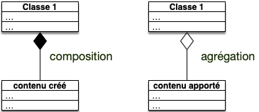
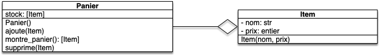
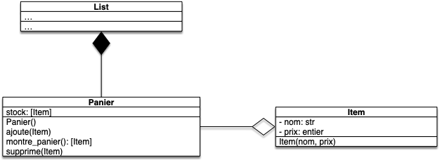

Composition et agrégation
Composition et agrégation permettent de lier des classes entres elles et plus principalement lorsqu'une classe admet comme attribut des objets de l'autre classe.
Ce qui les distingue :
Définition :
- agrégation : quand les objets utilisés sont créés en dehors de la classe,
- composition : quand les objets utilisés sont créés dans le constructeur de la classe qui les utilise.
Il est important de comprendre que si des objets n'ont pas été crées dans la classe qui l'utilise, ils peuvent être connus par d'autres méthodes du programme et donc être modifiées par celles-ci.
Les exemples de composition et d'agrégation de la vraie vie sont souvent un peu bizarres. Mais par exemple :
- Un livre est composé de pages : pour créer le livre on a créé les pages : c'est une composition
- Les télécommandes ont besoin de piles pour fonctionner, mais on peut les remplacer : c'est une agrégation.
Schémas uml
Lorsque l'on utilise la composition ou l'agrégation de nos classes dans des schéma uml, on liera la classe composé (resp. agrégée) à la classe l'utilisant par une flèche. Cette flèche sera différente pour une composition ou une agrégation :

Exemple du panier d'achats
Prenons l'exemple du panier d'achat. On veut modéliser la gestion d'un panier sur un site d'achat en ligne. Ce panier aura les propriétés suivantes :
- il doit être initialement vide,
- on doit pouvoir ajouter des items dans le panier,
- on doit pouvoir montrer les items du panier,
- on doit pouvoir retirer un item du panier.
- un item doit avoir un nom et un prix
Modélisation uml

Le panier agrège des Items puisqu'ils sont ajoutés par une méthode dans l'objet.
Code python
Ceci s'implémente aisément en python :
class Panier:
def __init__(self):
self.stock = []
def ajoute(self, item):
self.stock.append(item)
def montre_panier(self):
return self.stock
def supprime(self, item):
self.stock.remove(item)
class Item:
def __init__(self, nom, prix):
self._nom = nom
self._prix = prix
def __eq__(self, other):
return self._nom == other._nom and self._prix == other._prix
def __repr__(self):
return f"Item({self._nom}, {self._prix})"
def __str__(self):
return f"Un item de nom {self._nom} valant {self._prix} euros."
Quels tests feriez vous pour vérifier la véracité de votre code ?
corrigé
corrigé
fichier test_panier.py :
from panier import Panier, Item
def test_init():
panier = Panier()
assert panier is not None
def test_montre_panier_vide():
panier = Panier()
assert panier.montre_panier() == []
def test_ajoute():
panier = Panier()
panier.ajoute(Item("macbook", 1000))
assert panier.montre_panier() == [Item("macbook", 1000),]
def test_supprime_dans_panier():
panier = Panier()
panier.ajoute(Item("macbook", 1000))
panier.supprime(Item("macbook", 1000))
assert panier.montre_panier() == []
def test_item_eq():
assert Item("macbook", 1000) == Item("macbook", 1000)
assert Item("Rolex", 1000) != Item("macbook", 1000)
assert Item("Rolex", 10000) != Item("Rolex", 1000)Je n'ai pas l'habitude de tester les méthodes __repr__ et __str__ qui ne sont utilisées que pour l'affichage.
On peut alors utiliser notre classe, par exemple :
from panier import Panier, Item
panier = Panier()
print(panier.montre_panier())
mac = Item("macbook", 1000)
print(mac)
panier.ajoute(mac)
print(panier.montre_panier())
panier.ajoute(Item("grosse Rolex", 50000))
print(panier.montre_panier())
panier.supprime(Item("grosse Rolex", 50000))
print(panier.montre_panier())Dont l'exécution va donner :
[]
Un item de nom macbook valant 1000 euros.
[Item(macbook, 1000)]
[Item(macbook, 1000), Item(grosse Rolex, 50000)]
[Item(macbook, 1000)]
Les items sont ajoutés et supprimés du Panier mais ne sont pas crée par lui : c'est bien une agrégation.
Vous remarquerez que lors de l'affichage d'une liste, c'est la fonction repr qui est utilisée et non str.
- Commentez la méthode
Item.__str__puis exécutez à nouveau le code. Conclusion ? - Décommentez la méthode
Item.__str__et commentez maintenant la méthodeItem.__repr__puis exécutez à nouveau le code. Conclusion ?
corrigé
corrigé
La fonction str utilise la méthode Item.__repr__ si Item.__str__ n'est pas défini, mais pas le contraire.
Si on ne doit coder qu'une seule méthode, c'est __repr__ qu'il faut faire.
Composition du stock
Nous avons cependant oublié de compter une composition : le stock. Il est en effet crée par le panier. On est donc plutôt dans le schéma suivant :

Cette composition est importante car les listes de python sont mutables :
Si une classe est composée d'autres objets mutables, ces parties peuvent être modifiées en dehors de la classe.
Dans notre cas la méthode Panier.montre_panier() retourne directement l'attribut stock. et une fois qu'un objet a été donné au monde extérieur on ne contrôle plus son état. Il peut être utilisé a priori par n'importe quoi d'autre dans le programme comme le montre le code suivant :
panier = Panier()
print(panier.montre_panier())
panier.ajoute(Item("macbook", 1000))
copie = panier.montre_panier()
copie.append(Item("fausse rolex", 50))
print(panier.montre_panier())On a ajouté une fausse rolex à notre panier sans que le panier ne le sache ! Cela peut poser de gros problème car la méthode Panier.ajoute_panier(item) fait certainement des vérifications pour ne pas que l'on puisse ajouter de contrefaçons.
Pour que tout se passe comme prévu, il faut donc s'assurer que notre stock ne uisse être modifié. Ceci peut se faire de 2 façons :
- la méthode
Panier.montre_panier()rend une copie du stock, - notre stock est immutable et et on reconstruit un nouveau stock à chaque ajout d'item.
Le choix d'une stratégie ou de l'autre va dépendre du nombre de fois où l'on consulte le panier vs le no,bre de fois où on y ajoute des éléments.
Rendre une copie
On modifie la méthode montre_panier() :
class Panier:
# ...
def montre_panier(self):
return list(self.stock)
#...Rendre le stock non mutable.
On utilise un tuple qui est une liste sans possibilité de modification. Le code suivant crée un nouveau tuple en utilisant l'opération + des tuples qui crée un nouvel objet. :
class Panier:
def __init__(self):
self.stock = tuple()
# ...
def ajoute(self, fruit):
self.stock = self.stock + (fruit,)
def supprime(self, fruit):
stock_temporaire = list(self.stock)
stock_temporaire.remove(fruit)
self.stock = tuple(stock_temporaire)
#...
Selon que l'on aura beaucoup d'ajouts ou beaucoup de visualisation du panier, on choisira l'une ou l'autre solution. Mais si on a pas d'idée, on préférera toujours cette solution qui est la plus robuste.
À retenir
Une bonne façon de programmer est d'utiliser par défaut uniquement des objets non modifiables et que si le besoin s'en fait sentir de les rendre modifiables.
Il ~nous~ vous reste à modifier les tests :
Modifiez les tests pour qu'ils passent avec notre nouvelle classe Panier
corrigé
corrigé
Il faut vérifier que le stock est un tuple.
fichier test_panier.py :
from panier import Panier, Item
# ...
def test_montre_panier_vide():
panier = Panier()
assert panier.montre_panier() == tuple()
def test_ajoute():
panier = Panier()
panier.ajoute(Item("macbook", 1000))
assert panier.montre_panier() == (Item("macbook", 1000),)
def test_supprime_dans_panier():
panier = Panier()
panier.ajoute(Item("macbook", 1000))
panier.supprime(Item("macbook", 1000))
assert panier.montre_panier() == tuple()
# ...